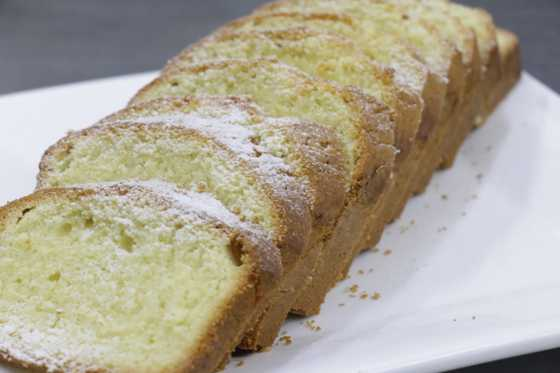
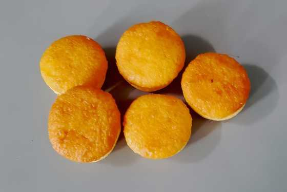

お店のこと
hammer cafe は、キッチンカーでお菓子を販売するお店です。Instagramのプロフィールでは「子どもと恐竜とシフォンケーキ好きが営業するキッチンカー」と紹介されています。
店主は現役の保育士さん(プロフィール記載)。子どもたちの毎日に寄り添うまなざしが、やさしいおやつづくりの根っこにあるのかもしれません。
営業は土日祝の日中、君津市西粟倉が中心です。駐車場・駐輪場もあるそうです(Instagram記載)。
店名「hammer」の意味は確認できていません。制作側のイメージとして「コツコツ、ていねいに」と読んでいますが、由来は未確認です。

おやつ
投稿には、シフォンケーキのほか、タルト・チーズケーキなどの焼き菓子が並んでいます。内容は日によって変わります。メニュー詳細・価格は準備中です。

チーズケーキイメージ・詳細は準備中

タルトイメージ・詳細は準備中

焼き菓子イメージ・詳細は準備中

ふわふわのおやつイメージ・詳細は準備中


口コミ
イメージ例以下は制作側が作成した例で、実際のお客様の声ではありません。
休日のおでかけ先で見つけて、ふんわりしたケーキを子どもと分け合いました。イメージ例
恐竜好きの息子が、カレンダーのマークを見つけて大喜びでした。イメージ例
やさしい甘さで、散歩のおやつにちょうどよかったです。イメージ例
アクセス・営業
- 住所
- 〒292-1168 千葉県君津市西粟倉130
- 営業
- 土日祝 10:00〜16:00(Instagramプロフィール記載。販売場所・日はカレンダーでご確認ください)
- 電話
- 準備中
- 価格・メニュー詳細
- 準備中
- @hammercafe_
写真クレジット
使用写真はすべてフリー素材(撮影地は海外含む)で、店舗の実際の様子ではありません。縮小のみ。ライセンス: CC0 1.0 / CC BY 4.0 / CC BY 3.0 / CC BY 2.0 / CC BY-SA 4.0 / Public Domain Mark
- whole.jpg: Strawberry shortcake / Shisma / CC BY 4.0
- pound.jpg: Pound cake / Jackson Monichan / CC0
- cheesecake.jpg: Cheesecake / Andy Li / CC0
- tart.jpg: Tart with strawberry and blueberries / Shisma / CC BY 4.0
- cookies.jpg: Danish butter cookies / sdnet01 / CC0
- orange.jpg: Pound cake closeup / chooyutshing / Public Domain Mark 1.0
- latte.jpg: Two Hands Cafe latte art / Drew Coffman / CC0
- espresso.jpg: Espresso Coffee 01 / Jubair1985 / CC0
- steam.jpg: Coffee steaming in a mug / PedanticNarrativeController / CC0
- turq.jpg: Bright turquoise mug sits on a wooden table / Shixart1985 / CC BY 2.0
- gray.jpg: Gray espresso cup with amaretto / Friedrich Haag / CC BY-SA 4.0
- beans.jpg: Coffee Beans macro 1 / Daniel Schwen / CC BY 3.0
- curtain.jpg: Sunlight and shadows on white cotton curtain / W.carter / Public Domain Mark